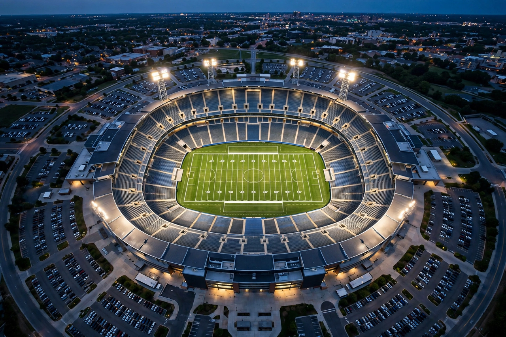

| Stadium | |
|---|---|
 A modern stadium from above | |
| Purpose | Sporting events, concerts, mass gatherings |
| Origin | Ancient Greek stadion racecourse |
A stadium (plural stadiums or stadia) is a place or venue for outdoor sports, concerts and other events, consisting of a field or stage wholly or partly surrounded by a tiered structure designed so that spectators can stand or sit and view the event. Modern stadiums are among the largest structures built for public assembly, with the biggest seating over 100,000 people.
The word derives from the Greek stadion, the footrace of about 192 metres that was the original event of the ancient Olympic Games and later a standard unit of length. Greek cities built elongated U-shaped racecourses, often hollowed into hillsides; the stadium at Olympia and the Panathenaic Stadium in Athens are famous survivals. Rome adapted the form in its circuses and amphitheatres. After a long decline, stadium building revived with modern organised sport in the 19th century, and the revival of the Olympic Games from 1896 spurred a century of ever-larger venues.
Stadium design balances sightlines, capacity, safety and atmosphere. Typical features include a bowl of continuous tiered seating, floodlighting, giant video screens, hospitality suites, and increasingly retractable roofs and movable pitches. Many are multi-purpose, hosting association football, athletics, cricket, rugby, American football, baseball or concerts. Following disasters such as Hillsborough in 1989, most modern stadiums are all-seater.
The largest stadium in the world by capacity is generally considered to be the Narendra Modi Stadium in Ahmedabad, India (about 132,000, for cricket), followed by the Rungrado 1st of May Stadium in Pyongyang. Iconic venues include Wembley Stadium in London, the Maracanã in Rio de Janeiro, and the Colosseum — antiquity's greatest amphitheatre — as a historical ancestor. Historic sporting plazas such as the Oval Plaza at Jerash show how ancient cities integrated spectacle spaces into their urban fabric.